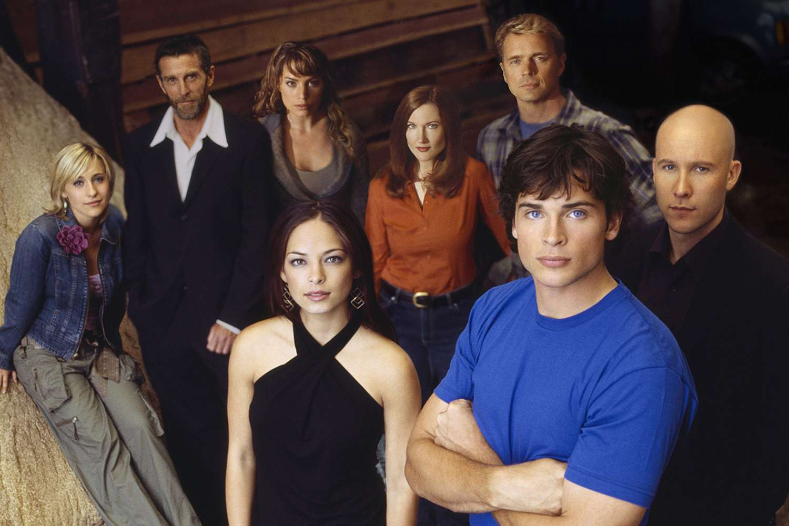

El elenco de Smallville fue una de las claves de su éxito, ya que logró construir versiones memorables de personajes clásicos de DC, combinando actores jóvenes con figuras más experimentadas.
El protagonista es Tom Welling, quien interpreta a Clark Kent. Su actuación se centra en el conflicto interno del personaje, mostrando su evolución desde adolescente hasta convertirse en héroe. Junto a él aparece Kristin Kreuk como Lana Lang, uno de los intereses amorosos principales en las primeras temporadas.
Uno de los personajes más destacados es Lex Luthor, interpretado por Michael Rosenbaum, cuya evolución de amigo a enemigo es uno de los ejes dramáticos más fuertes de la serie.
También forma parte del núcleo principal Allison Mack como Chloe Sullivan, un personaje original de la serie que se volvió muy popular entre los fans.
Más adelante se suma Erica Durance como Lois Lane, aportando dinamismo y una relación clave en la vida de Clark.
En cuanto a figuras adultas, destacan John Schneider y Annette O'Toole como los padres adoptivos de Clark, pilares fundamentales en su formación moral.
También tiene gran peso John Glover como Lionel Luthor, un personaje complejo que evoluciona a lo largo de la serie.
Top 10 personajes / actores más destacados
